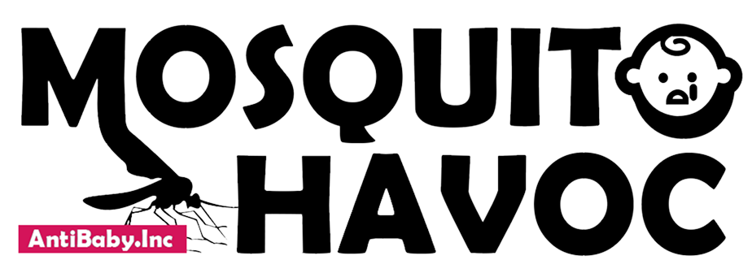
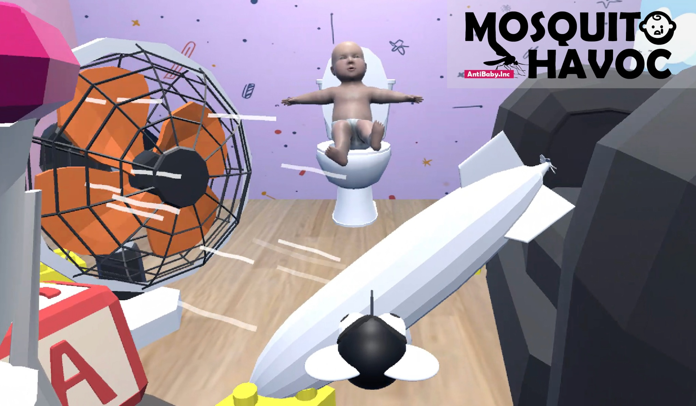
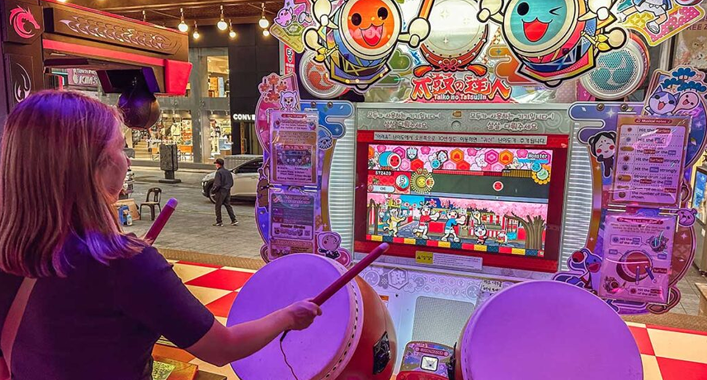
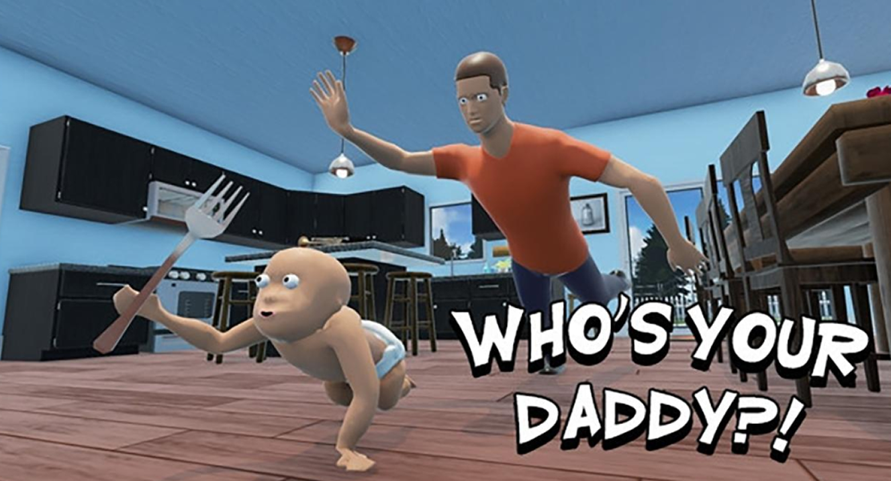
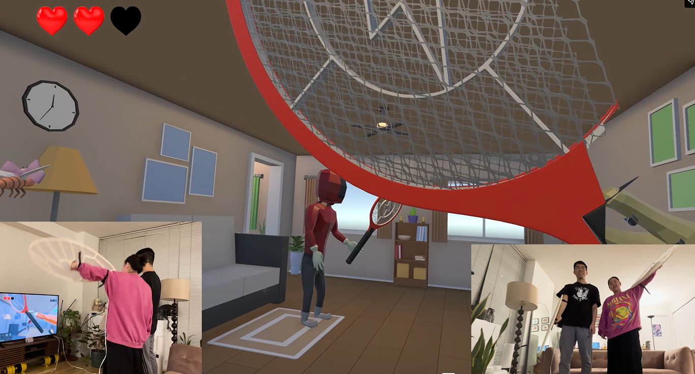
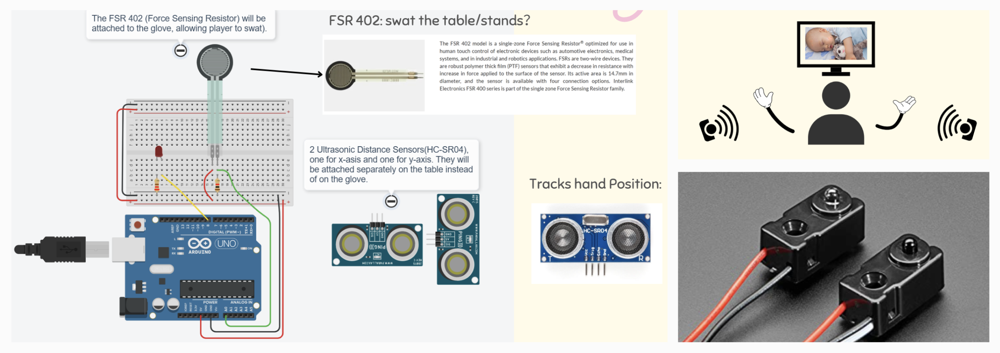
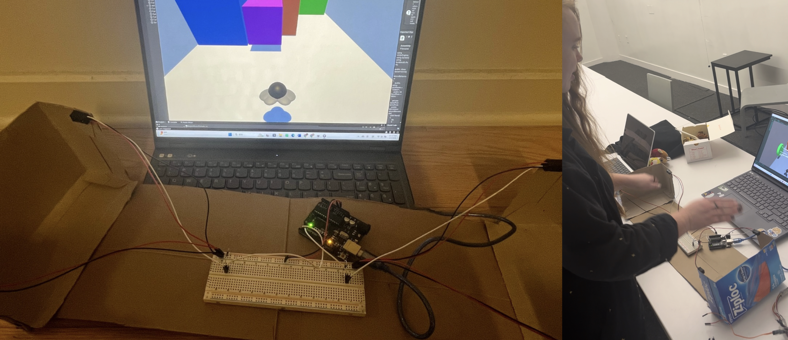
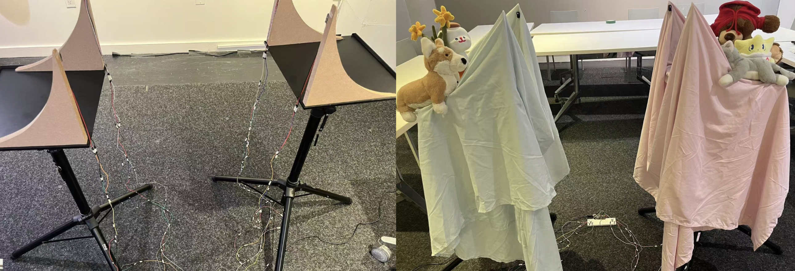
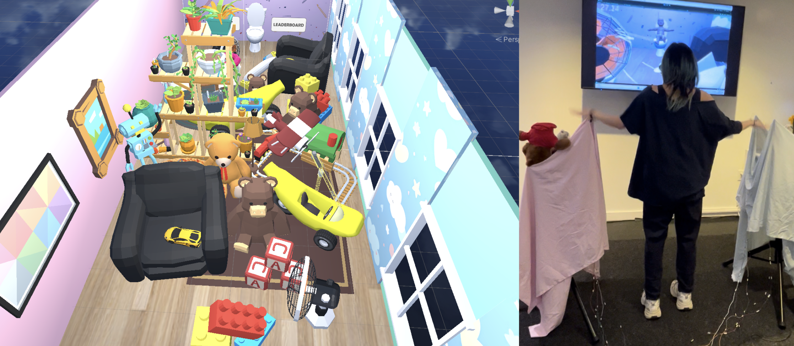
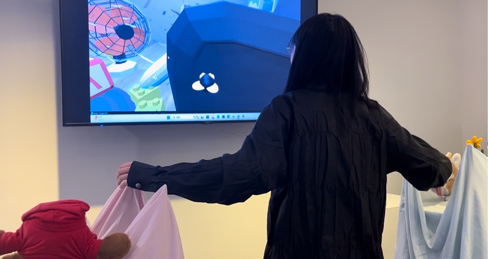

01
Graphic Design
I created the visual identity in Adobe Illustrator, balancing bold simplicity with a touch of absurd humor to reflect our playful tone.

PHYSICAL COMPUTING · GAME DESIGN
By flipping control and embracing inefficiency, Mosquito Havoc turns awkward movement into empathy and humor.

After reading Queering Control(ler)s Through Reflective Game Design Practices by Jess Marcotte, we began exploring how interaction design could challenge the usual expectations of efficiency, control, and comfort.
Games like Taiko are about rhythmic movement, balance between control and chaos. While Who's Your Daddy? is about asymmetrical challenge (protect vs disrupt). Mosquito Escape, a wearable-controller game project, clarified my decision not to use wearable interfaces.



Players embody a restless mosquito. Instead of protecting the baby—or pressing buttons or wearing wings—they flap their arms to fly and sting the baby, turning physical discomfort into playful absurdity. The game asks: “What if control felt unstable, emotional, and shared?”
01
I created the visual identity in Adobe Illustrator, balancing bold simplicity with a touch of absurd humor to reflect our playful tone.

02
For one iteration, I tried force and ultrasonic sensors, but I found that the IR break-beam was the most responsive and intuitive for contact-free control.

03
I replaced Unity's keyboard input with an Arduino IR-sensor prototype and used cardboard tests to tune spacing and flap-to-movement response.

04
I built a soft, playful installation with fabrics and plush toys, echoing the Unity scene's pink-blue palette across physical and digital space.

05
I refined object placement in Unity and adjusted sensor positions in the physical space to better guide player routes and improve detection.

Instead of optimizing control, we designed friction. By flipping control and embracing inefficiency, Mosquito Havoc turns awkward movement into empathy and humor. Players feel the mosquito's futile struggle: flapping desperately to move only a little forward.
Arm gestures control movement: right arm → fly left-forward, left arm → fly right-forward, both arms → fly forward. Fans repel the mosquito when approached, while furniture obstacles alter or block the flying path of the mosquito.


This project taught me that failure can be performative. Each bug and misread gesture became part of the game’s rhythm. It showed me the power of queering interaction—breaking conventions to build inclusive experiences that turn frustration into laughter and connection. Collaboration also made the unpredictability rewarding, as we iterated and improvised together.